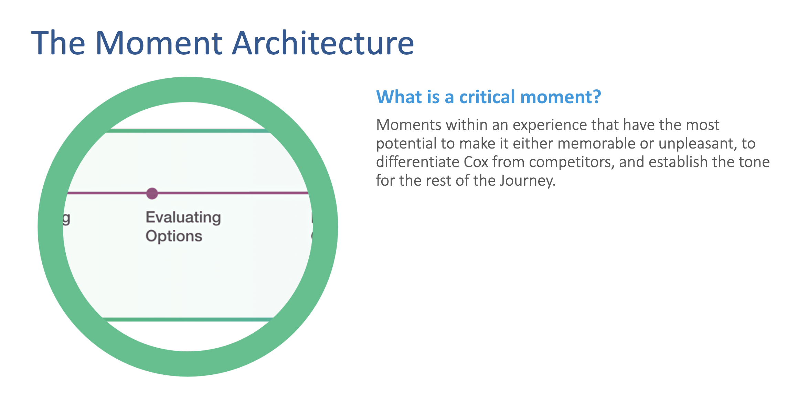
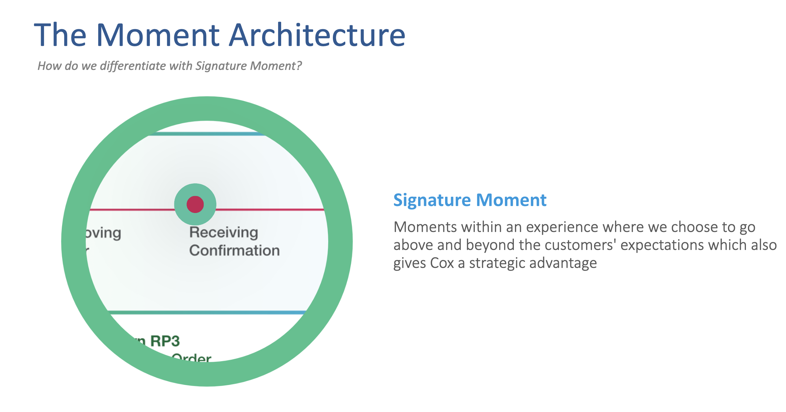
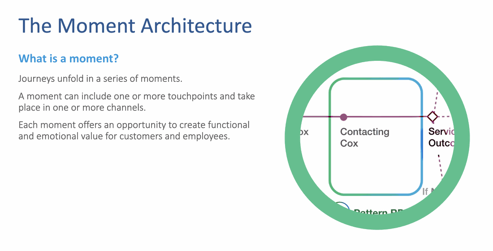
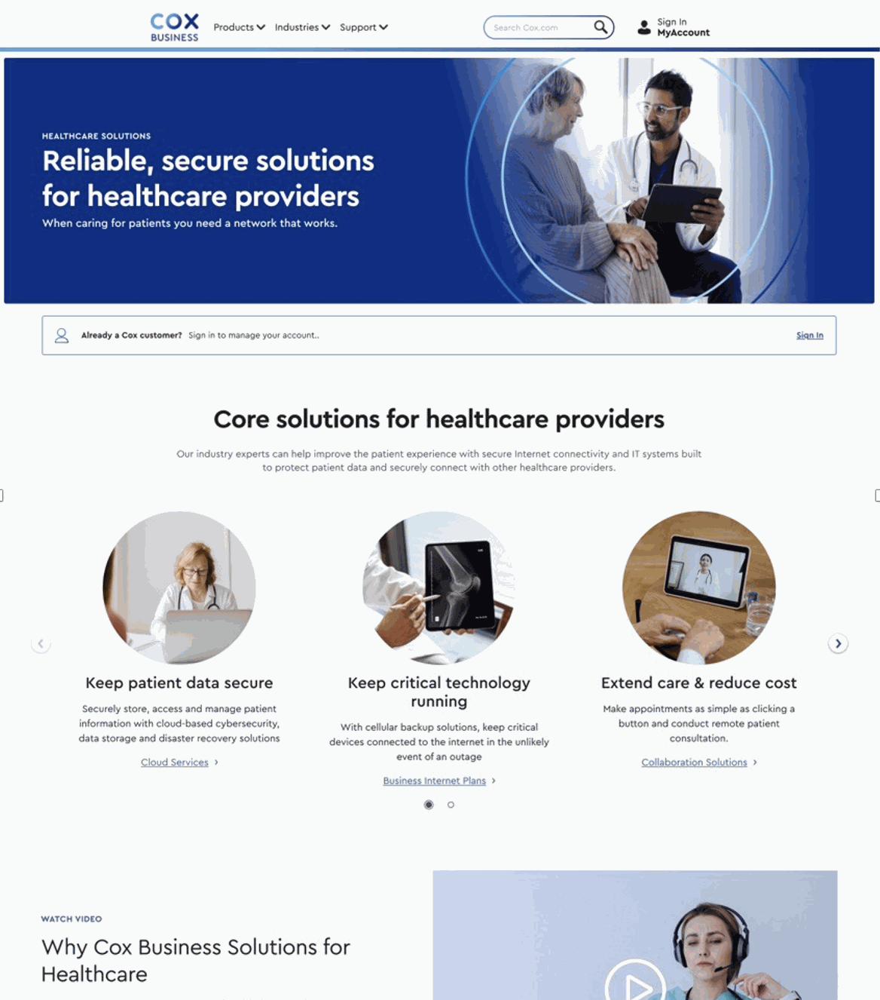
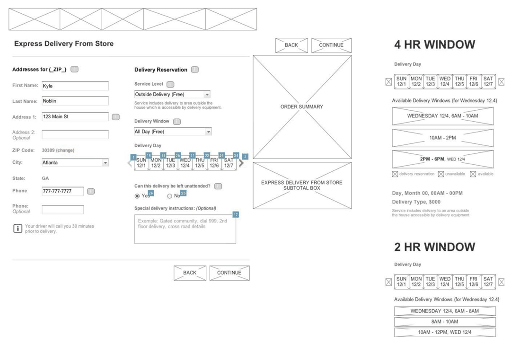
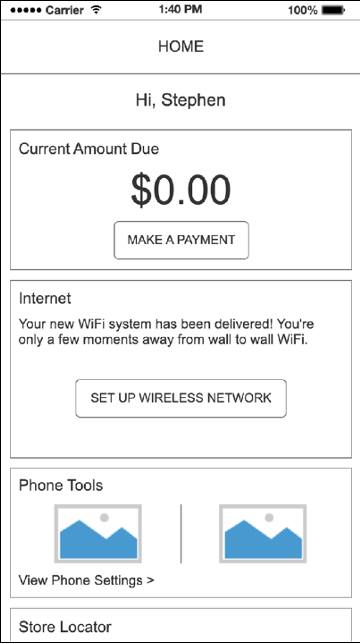
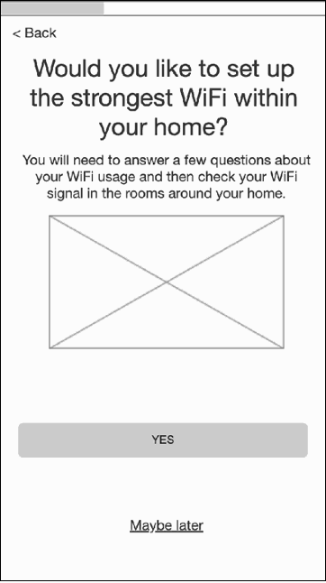
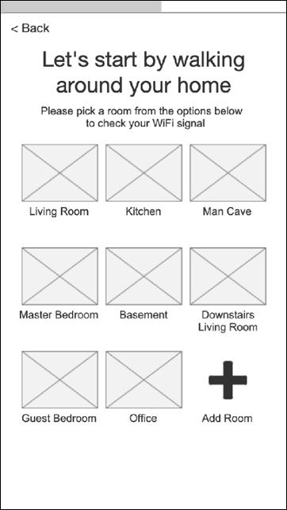

CX & Product Design Leader
I'm a husband, a dad of two, and usually coaching a game somewhere.
Coaching taught me the same thing leading teams has: trust comes first. Performance follows.
I'm a CX and product design leader in Atlanta. For 15+ years, I've helped companies like Cox, Home Depot, and Verizon turn customer behavior into growth by aligning product, marketing, and operations around the customer.
I focus on closing the gap between what customers need and how organizations actually show up.
I architect customer journeys for Fortune 100 companies. My superpower: aligning teams with competing goals by bringing the right artifacts to the table so everyone moves together.
Not all interactions deserve equal investment. Moment Architecture is my framework for prioritizing where to prevent failure vs where to exceed expectations - and how to align cross-functional teams around those decisions.
Interactions where failure causes immediate pain or abandonment. These deserve investment in prevention, clarity, and error recovery. Example: Self-install equipment connection — failure reduced from 30% to 10%.

Interactions where exceeding expectations creates lasting positive association. These deserve investment in personalization, delight, and brand differentiation. Example: Install confirmation with tech name and real-time updates.

This framework became the organization-wide standard at Cox for evaluating experience initiatives, used across Product, Marketing, Operations, and Technology to align investment decisions.

Experience IQ (EIQ) translates strategic intent into executable design. It's the framework connecting why we do something (principles), what we build (pillars and capabilities), and how it gets delivered (enablers and UI) - ensuring every interaction traces back to a business outcome.
Below, you'll see Moment Architecture applied to real work with measurable outcomes.
STRATEGIC REPOSITIONING
Cox Business faced flat growth. The problem wasn't messaging - it was structural inconsistency. Product, Sales, Marketing, and Care were expressing different definitions of value.
Three options: campaign-only fix (fast, creates expectation gap), pricing-led strategy (short-term, reinforces commodity positioning), or re-architect the entire experience around one value system ("Make It Personal").
Chose the slowest, hardest path. Realigned product packaging to use cases, shifted sales framing, built industry-specific narratives (F&B, Healthcare, Retail). Unified language across 20+ touchpoints.
"This is the first time our messaging, product, and sales story actually match." — CMO
Legacy product structure limited packaging simplification. Sales incentives tied to volume, not relationship quality. Brand and Product operated on different timelines. Could not redesign backend systems.
What forced creativity: Designed value system that could flex across existing constraints. Sequenced rollout to align with operational readiness.
Healthcare vertical conversion increased 34%. Average contract value up 22% (customers chose higher tiers when positioned around uptime vs speed).
$40M+ incremental revenue. F&B conversion +28%, Retail +19%.
"Everyone says they support small business. You guys actually showed me how." — Healthcare customer

Healthcare-specific landing page: "When caring for patients, you need a network that works"
PLATFORM ARCHITECTURE
Capture same-day delivery demand without building dedicated infrastructure. Use store inventory as fulfillment centers to compete with Amazon Prime.
Integrate fulfillment visibility into cart flow. Real-time inventory sync across 2,000+ stores, delivery zone calculation, dynamic pricing based on distance and delivery window.
Cart shows three fulfillment options side-by-side: Standard Shipping, Store Pickup, Express Delivery. Express displays "Get it today by 6pm - $9.99" with real-time availability check.
Express Delivery became 8% of orders in first 6 months with 34% higher AOV. Overall conversion +15%. Platform contributed $1B+ in incremental annual sales. 14-point CSAT improvement.

Express Delivery checkout flow: address input, delivery reservation calendar, service level selection, and delivery window picker showing 4-hour and 2-hour windows
JOURNEY ORCHESTRATION
Cox Communications ranked 9th out of 10 nationally in JD Power. Every business unit blamed someone else. Nobody owned the system.
"Every step felt like starting over with a new team." — Customer
"We're solving problems we didn't create." — Field Ops
Two paths: fix handoffs individually (faster, fails systemically) or redesign onboarding as a unified system. Chose the harder path.
Created "Becoming a Customer" as a named program with ONE owner and ONE set of outcomes across Product, Sales, Support, Field Operations, and Technology. Mapped 120-day journey model.
"This is the first time I've seen onboarding as one system." — Executive sponsor
Product prioritized roadmap velocity. Field Ops prioritized efficiency. CX prioritized satisfaction. All three were misaligned.
Breakthrough: Service blueprint exposing disconnects between frontstage and backstage. "Story from the future" narrative aligning teams on shared vision.
Resolution: Established shared success metrics across teams. Created governance model for journey ownership.
Not all moments drive outcomes equally. Identified critical moments in first 120 days (install, first use, first issue) for prevention and clarity. Elevated moments designed for emotional reassurance. Routine moments streamlined to reduce friction.
Impact: Focused investment on moments that actually drive churn and satisfaction. Avoided over-designing low-impact interactions.
Field techs compensated on installation speed, not customer satisfaction. Multiple business units with conflicting KPIs. Limited control over field operations. No single owner of onboarding.
Took 4 months to change comp structure to include retention metrics. Designed frameworks that aligned teams without requiring full org restructure.
Post-install CSAT +23%, support calls -18%, 90-day churn -8%. JD Power 9→3 over 3 years across 35 redesigned moments.
MOMENT ARCHITECTURE APPLIED
Every incomplete self-install requiring a truck roll costs $150. 50,000 failed attempts per year = $7.5M in avoidable OpEx. Equipment connection was classified as a Critical Moment - 30% of all failures happened here.
Build a guided experience that proactively prevents failure rather than reactively troubleshooting. Don't give customers generic text instructions - show them exactly which cable goes into which port on their specific modem model.
Device detection API, equipment-specific visual library, real-time connectivity testing, adaptive troubleshooting decision trees.
Incomplete install rate dropped from 30% to 3%. That 27-point improvement × 50,000 attempts × $150 per truck roll = $7M annual OpEx savings.
90%+ SUS score (90th percentile). 15% reduction in installation-related support calls.



Wireframe progression: Home → Room selection → WiFi optimization